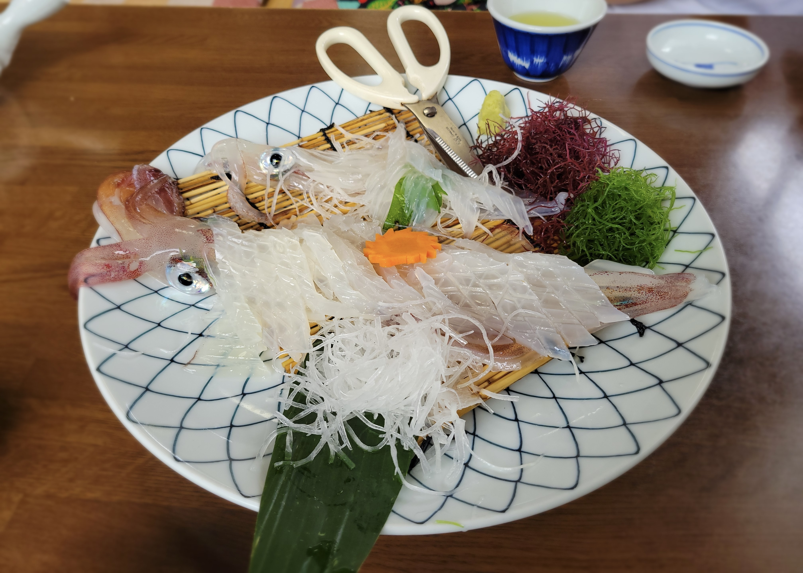
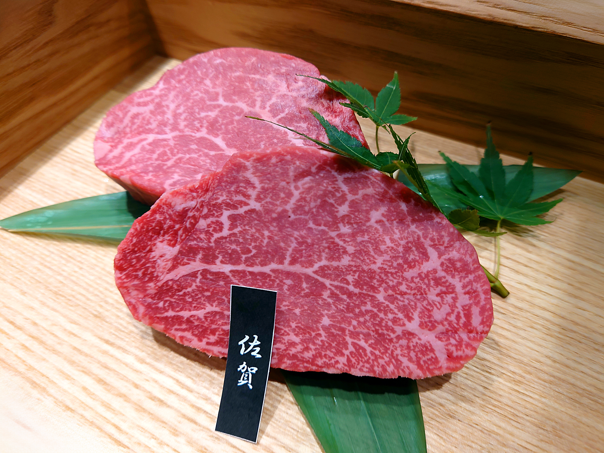
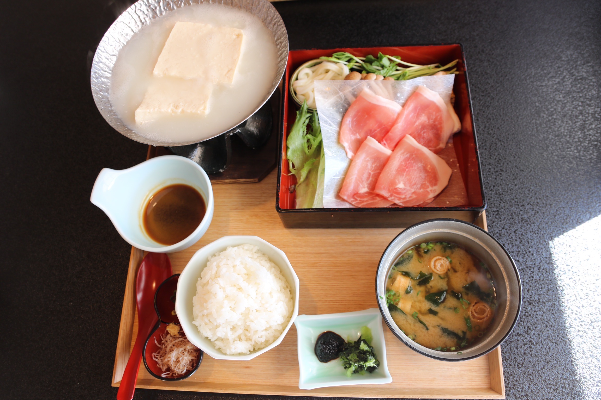
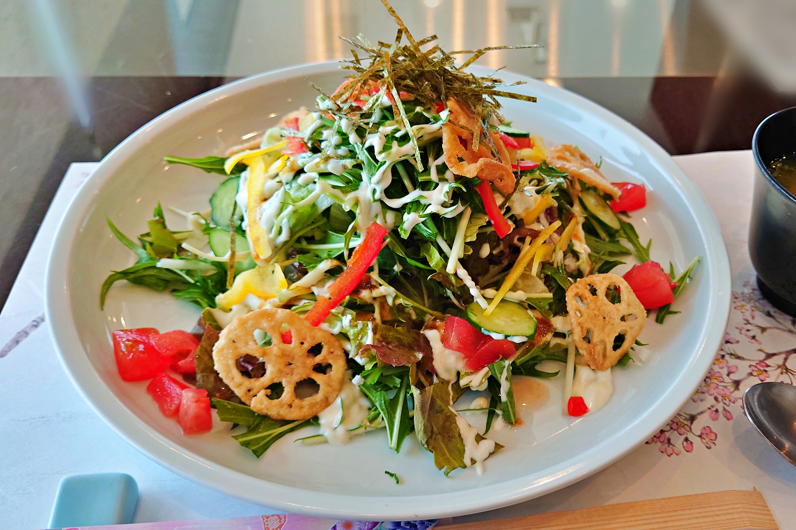
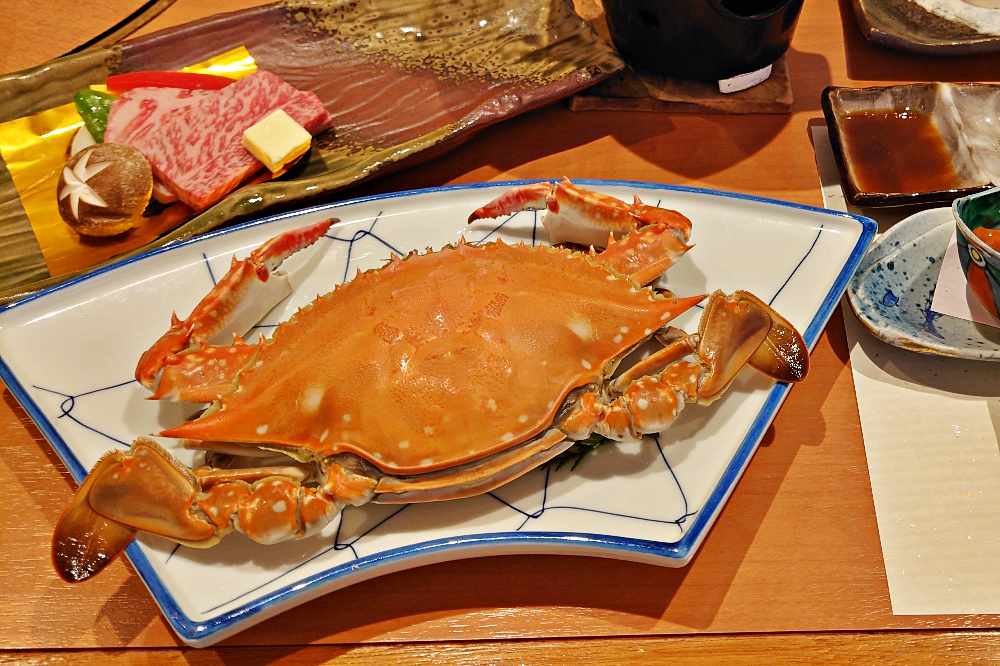
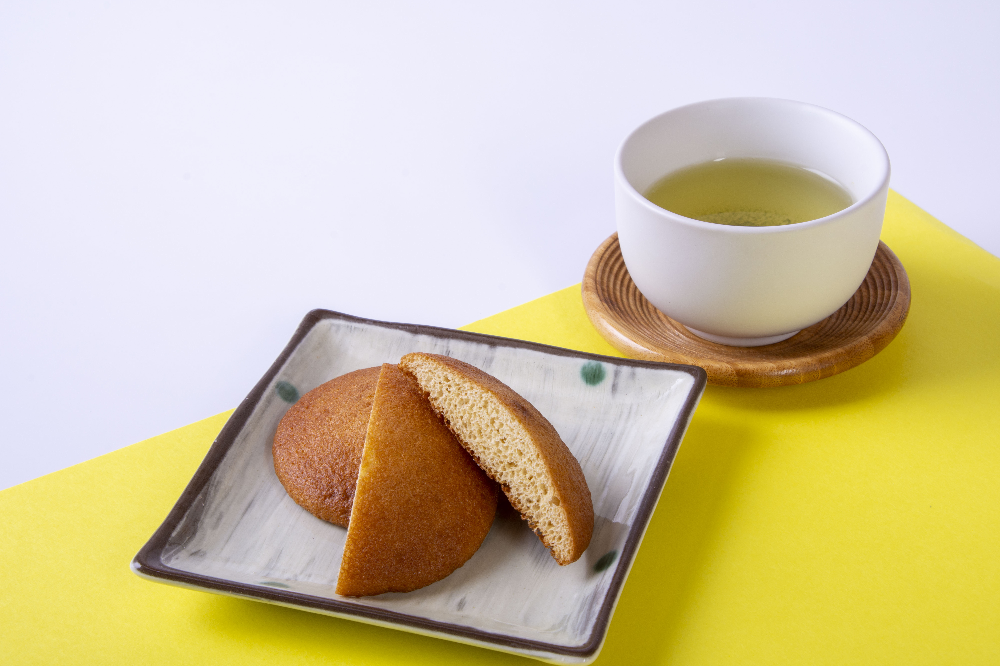

呼子のイカ
透き通るような身と、コリコリとした食感が魅力の呼子のイカ。 新鮮なイカを生き造りで味わえる、佐賀を代表する海の幸です。
海の幸、山の幸、地元の人に愛される味を楽しむ旅。

透き通るような身と、コリコリとした食感が魅力の呼子のイカ。 新鮮なイカを生き造りで味わえる、佐賀を代表する海の幸です。

柔らかな肉質と、口の中でとろける上質な脂が魅力の佐賀牛。 豊かな風味と甘みを楽しめる、佐賀を代表するブランド牛です。

温泉水でじっくり煮込むことで、豆腐がとろりとやわらかくなる嬉野温泉湯どうふ。 まろやかな口当たりと大豆のやさしい味わいを楽しめる、嬉野ならではの名物です。

ご飯の上に甘辛く炒めた肉と生野菜をのせ、 マヨネーズをかけて味わう佐賀市のご当地グルメ。

有明海で育った竹崎カニは、濃厚なうまみと甘みが魅力です。 塩ゆでや焼きガニなどで味わえる、太良町の名物です。
佐賀県内で親しまれている佐賀ラーメン。 豚骨を中心とした定番の味から、店ごとに個性のある一杯を楽しめます。

素朴でやさしい甘さと、しっとりやわらかな食感が魅力。 昔から幅広い世代に親しまれている、佐賀の伝統的なお菓子です。